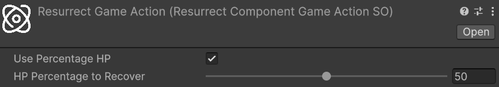

Resurrection
Resurrection brings a dead entity back to life, restoring it to a playable state with a configurable amount of HP. Unlike healing — which throws an exception when applied to a dead entity — resurrection is exclusively for entities that have already crossed their death threshold.
The requested HP amount is a base value before modifiers. Internally, resurrection routes through the same Heal pipeline used for direct healing, so all generic and HealSourceSO-specific heal modifiers apply. This means resurrection integrates naturally with any modifier system already in place: a buff that amplifies healing received will equally benefit resurrections, without any additional configuration.
Package Configuration
Before resurrection can be triggered, two fields in the AstraRpgHealthConfigSO need attention:
Default Resurrection Source
Type: HealSourceSO — Required: Yes
The HealSourceSO used automatically by the convenience Resurrect overloads and by the built-in Resurrect Game Action when no explicit source is provided. It categorises resurrection healing as a distinct type, enabling HealSourceSO-specific modifiers to apply. Without this field assigned, the convenience overloads fail at runtime with an assertion error.
See Heal Source for guidance on configuring HealSourceSO assets and Default Resurrection Source in the Package Configuration reference.
Default On Resurrection Game Action
Type: GameAction<Component> — Required: No
The Game Action executed automatically whenever any entity is resurrected, unless the entity defines its own Override On Resurrection Game Action. Use this to implement a common post-resurrection behavior shared across all entities — playing a revival visual effect, re-enabling a disabled GameObject, or resetting specific state. Leave it empty if no shared behavior is needed.
See Default On Resurrection Game Action in the Package Configuration reference.
Resurrecting an Entity
EntityHealth implements IResurrectable, which exposes three overloads.
Resurrect(PreHealContext) gives full control over the resurrection: amount, source, and healer entity. It expects a PreHealContext built with the same fluent builder used in direct healing:
// Assuming:
// - resurrectionSource is the HealSourceSO categorising this resurrection
// - healer is the EntityCore of the character performing the resurrection (null for a system action)
// - target is the EntityCore of the dead entity to resurrect
if (target.TryGetComponent(out EntityHealth targetHealth)) {
PreHealContext context = PreHealContext.Builder
.WithAmount(targetHealth.MaxHp / 2) // 50% of max HP as base amount, before modifiers
.WithSource(resurrectionSource)
.WithHealer(healer)
.WithTarget(target)
.Build();
targetHealth.Resurrect(context);
}
Refer to Direct Healing for a detailed explanation of PreHealContext and its fluent builder.
Resurrect(long) and Resurrect(Percentage) are convenience overloads that build the context automatically using the Default Resurrection Source from the configuration and a null healer (system-initiated resurrection). Use them when no specific caster is involved and the global default source is appropriate:
// Resurrect with a flat HP amount
targetHealth.Resurrect(100L);
// Resurrect with 30% of max HP
Percentage thirtyPercent = 30L;
targetHealth.Resurrect(thirtyPercent);
In all cases, the HP amount is the base value before heal modifiers are applied. Two constraints are always checked: the base amount must be strictly greater than the entity's death threshold, and must not exceed its maximum HP.
Heal Modifiers at Resurrection
Because resurrection calls Heal internally, the full modifier stack applies:
- Generic flat heal modifiers — add or subtract a flat HP amount from the base
- Generic percentage heal modifiers — scale the base HP up or down by a percentage
HealSourceSO-specific modifiers — flat and percentage modifiers associated with the configured resurrection source
The order of application is the same as described in the Direct Healing section: first the flat modifiers (generic and HealSourceSO-specific) are summed and applied to the base amount, then all percentage modifiers (generic and HealSourceSO-specific) are summed and applied to the result.
The entity's HP after resurrection may therefore differ from the base amount requested. ResurrectionContext.NewValue always reflects the actual HP after all modifiers have been applied.
Note
If active negative heal modifiers are strong enough to reduce the effective HP to or below the entity's death threshold, the system applies a fallback and forces HP to death threshold + 1, guaranteeing the entity is always resurrected alive. ResurrectionContext.NewValue reflects this clamped value.
The Resurrect Game Action
Relative path: Astra RPG Framework/Game Actions/Context: Component/Resurrect
ResurrectComponentGameActionSO is a ready-made Game Action that can be dropped into any Game Action slot in the inspector to resurrect an entity. It always uses the Default Resurrection Source from the configuration; no source field is exposed in the inspector.
The following image shows the ResurrectComponentGameActionSO inspector:

The configurable fields are:
- Use Percentage HP: if enabled, the entity is resurrected with a percentage of its maximum HP; if disabled, a flat HP amount is used instead
- Percentage HP to Recover: the percentage of max HP to restore, in the range 0–100. Active only when Use Percentage HP is enabled
- Flat HP to Recover: the flat HP amount to restore. Active only when Use Percentage HP is disabled
Note
If Percentage HP to Recover or Flat HP to Recover is set to 0, the game action falls back to resurrecting the entity with exactly 1 HP, guaranteeing the resurrection is always valid.
Common use case — automatic resurrection after a delay: combine ResurrectComponentGameActionSO with a Delayed Game Action inside the entity's Override On Death Game Action (or the global Default On Death Game Action). When the entity dies, the death game action fires a delayed sequence that triggers the ResurrectComponentGameActionSO after a configured number of seconds — implementing an automatic respawn without a single line of code. See the Game Actions documentation for details on composing and chaining game actions.
Per-Entity Customization
Each EntityHealth component exposes an Override On Resurrection Game Action field in its inspector that takes precedence over the Default On Resurrection Game Action defined in the configuration. Use it to give specific entities a unique post-resurrection behavior while keeping a sensible global default for everything else.
See Death in the Entity Health reference for the full list of per-entity death and resurrection inspector fields.
Resurrection Events
Resurrecting an entity raises multiple events. Because resurrection routes through Heal, the healing events fire first:
- Pre Heal Event and Entity Healed Event — raised by the internal
Healcall, carrying the standard healing context before and after modifiers. Subscribe to these if your logic needs to react to the healing component of a resurrection; for example, to trigger a heal-triggered ability even during resurrection - Entity Gained Health Event — raised when the entity's HP increases during the
Healcall. Useful for general HP-change listeners that do not need the full context of the healing, but just want to know when HP changes and by how much. An example use case is a UI health bar that needs to update whenever HP changes, regardless of the source of the change
After the healing pipeline completes and the resurrection game action has been dispatched:
- Entity Resurrected Event — the dedicated resurrection signal, carrying a
ResurrectionContextwith the following fields:- Target: the
EntityCoreof the resurrected entity (convenience accessor forReceivedHeal.Target) - PreviousValue: HP immediately before resurrection (at or below the death threshold)
- NewValue: HP after resurrection, computed as
PreviousValue + ReceivedHeal.HealAmount.NetAmount - AbsAmount:
NewValue − PreviousValue - ReceivedHeal: the full
ReceivedHealContextproduced by the internalHealcall, exposing:- HealAmount: a
HealAmountContextwithRawAmount(base amount before modifiers),AfterModifierAmount(after flat and percentage modifiers), andNetAmount(final HP actually added, capped to max HP) - HealSource: the
HealSourceSOused for this resurrection - Source: the healer
EntityCore(nullfor system-initiated resurrections, such as those triggered via the convenience overloads or theResurrectComponentGameActionSO) - IsCritical: whether the resurrection heal was flagged as a critical
- HealAmount: a
- Target: the
Each event is available in both global and extra variants on EntityHealth. Use global events when any GameObject in the game needs to receive the signal; use extra events for targeted, component-specific or GO-hierarchy-specific communications. See Global Events for guidance on choosing between them.